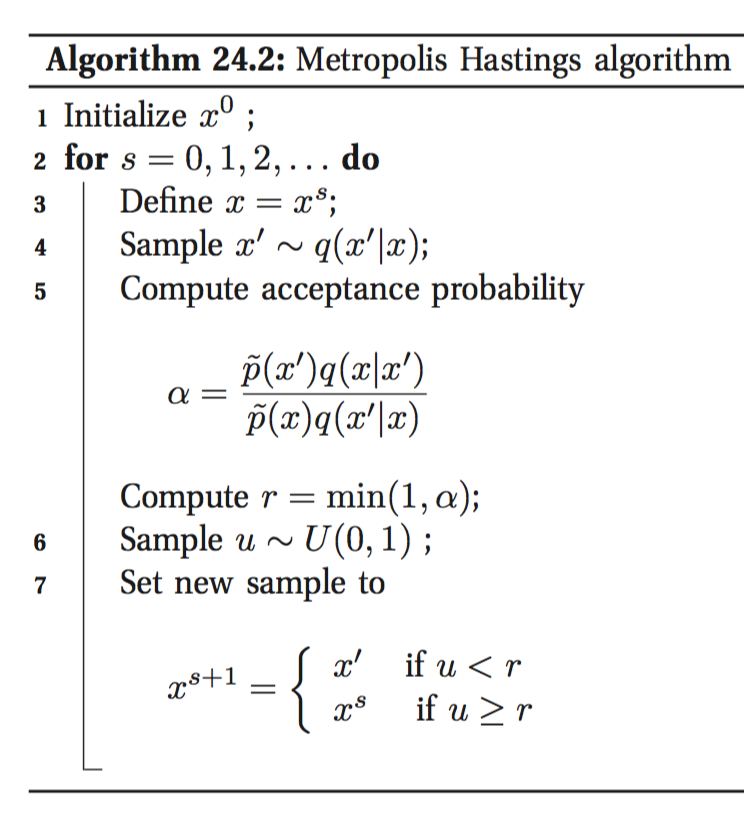

Our target:
I=∫h(x)f(x)dx=Ef[h(x)]
It's hard to compute it directly. Aprroximation:
Î =1N∑i=1Nh(xi)
where
x1,…,xN are sampled from
f.
In order to sample from f, we generate a Markov chain
x1,x2,…, whose stationary distribution is
f, and draw samples from the chain.
In order to generate the desired Markov chain, we use the Metropolis-Hastings Algorithm:

which ensures the fraction of time spent in each state
x is proportional to
p∗(x).
p˜(x) is unnormalized
p∗(x).
q is called a
kernel or a
proposal distribution, which propose a value that can be accepted or reject.
Why it works: satisfying detailed balance.
In practice it's hard to tell whether the Markov chain has reached its stationary distribution (computationally intractable), though there are a handful of diagnosing tricks. Samples collected before the chain has reached its stationary distribution do not come from p∗, and are usually thrown away. The initial period, whose samples will be ignored, is called the burn-in phase.
special case: Gibbs sampling.
q(x′|x)=p(x′i|x−i)II(x′−i=x−i)
In Gibbs sampling, the acceptance probability
α≡1.
reference
Book: Machine Learning - A Probabilistic Perspective(Chapter 24)